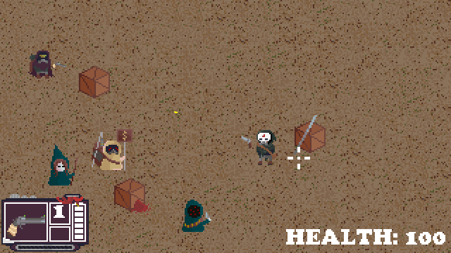

Site Info
A website for listing and sharing my creative projects.
Hover over the sidebar on the left to reveal the site navigation.
What is Neocities?A website for listing and sharing my creative projects.
Hover over the sidebar on the left to reveal the site navigation.
What is Neocities?Various projects that I'm working on or have worked on.
A topdown 2D RPG inspired by games like Fallout, Enter the Gungeon, Hotline Miami, and more.
"Experimental Digital Art". Graphics created in digital editing software from photography. This page is not intended for low-spec computers or mobile. A mobile version of the gallery will be avaible in the future.


Formatted in MDY.
Today's post is gonna be something new, instead of coding progress I'm gonna show off some sneak peeks into other areas of the game development that the rest of the team has been working on.

The Inventory system is starting to be fully fleshed out, I've been working on a reserve system for ammo and an item system.
It's been a while. I took a break from coding for a month or so, but I'm back at it now. Lots of spritework has been done, some songs have been made, and I've rewrote some of the lore. Lets catch you up.
I've been busy and havent posted about development in a while so this is a catch up post. Writing for the lore and main story has been completed and is becoming more concrete. Lots more sprites have been made and some lovely friends are making music for the game. Here's some clips of demo gameplay.
Ok so for one im not streaming anymore it was kinda fun but not fun enough but the cool news is that im finally starting work on a game with my partner, who is doing all the sprites and animations. it's gonna be an RPG with twin stick shooter combat. heres some progress so far: